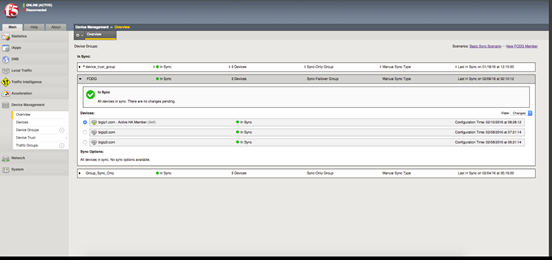
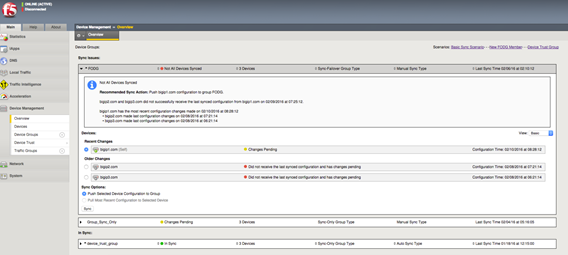

Updated Date: 07/07/2026
Managing Configuration Synchronization
Configuration synchronization (also known as config sync) is the operation that the BIG-IP system performs to propagate BIG-IP configuration changes, including device trust information, to all devices in a device group. BIG-IP devices that contain the same configuration data can work in tandem to more efficiently process application traffic on the network.
If you want to exclude certain devices from config sync, you simply exclude them from membership in that particular device group.
You can sync some types of data on a global level across all BIG-IP devices, while syncing other data in a more granular way, on an individual application level to a subset of devices. For example, you can set up a large device group to sync resource and policy data (such as iRules and profiles) among all BIG-IP devices in a data center, while setting up a smaller device group for syncing application-specific data (such as virtual IP addresses) between the specific devices that are delivering those applications.
Whenever synchronization occurs, either automatically or manually, the BIG-IP system attempts to optimize performance by syncing only the data that changed since the last config sync operation.
Important: To synchronize configuration data among device group members, all members must be running the same version of the BIG-IP system software.
Before configuring the config sync address, verify that all devices in the device group are running the same version of BIG-IP system software.
You perform this task to specify the IP address on the local device that other devices in the device group will use to synchronize their configuration objects to the local device.
Note: You must perform this task locally on each device in the device group.
-
Confirm that you are logged in to the device you want to configure.
-
On the Main tab, click Device Management > Devices.
This displays a list of device objects discovered by the local device.
-
In the Name column, click the name of the device to which you are currently logged in.
-
Near the top of the screen, click ConfigSync.
-
From the Local Address list, retain the displayed IP address or select another address from the list.
F5 Networks recommends that you use the default value, which is the self IP address for the internal VLAN. This address must be a non-floating (static) self IP address and not a management IP address.
Important: If the BIG-IP device you are configuring is accessed using Amazon Web Services, then the internal self IP address that you select must be an internal private IP address that you configured for this EC2 instance as the Local Address.
-
Click Update.
After performing this task, the other devices in the device group can synchronize their configurations to the local device whenever a sync operation is initiated.
You can use the BIG-IP Configuration utility to view the config sync status of the local device relative to the other members of the device group. If you have configured the device group for manual synchronization, you can use the config sync status information to determine whether you need to perform a manual sync operation.
-
Display any BIG-IP Configuration utility screen.
-
In the upper left corner of the screen, view the status of the device group:
- If the sync status is green (
In Sync), the local device is synchronized with all device group members, and you do not need to perform a config sync operation. - If the sync status is yellow (
Changes Pending), the BIG-IP configuration on the local device is out of sync with one or more device group members, or device trust is not fully established. You must therefore ensure that a config sync operation occurs for the relevant device group. If the Automatic Sync setting is enabled for the device group, the BIG-IP system synchronizes the configuration automatically, and no user action is required.
- If the sync status is green (
For more details, you can click the status, which displays the Overview screen. Using this screen, you can view a detailed message about the status, as well as the status of each device group member.
You can use the BIG-IP Configuration utility to view the config sync status of any device group and each of its members, including the special Sync-Only device group for device trust. If the Automatic Sync setting is disabled for a device group, you can use the config sync status information to determine whether you need to do a manual sync operation.
-
On the Main tab, click Device Management > Overview.
-
In the Device Groups area of the screen, click the arrow next to the name of the relevant device group.
The screen expands to show a summary and details of the sync status of the selected device group, as well as a list of the individual devices within the device group.
-
In the Devices area of the screen, view the sync status of each device:
-
If all devices show a sync status of green, the configurations of all device members are synchronized, and you do not need to perform a config sync operation. Here is a sample Overview screen showing a status of
In Sync:
-
If any device shows a sync status of
Changes Pending, you must synchronize the configuration on that device to the other members of the device group. Here is a sample Overview screen showing a status ofChanges Pending:
A status of
Changes Pendingfor a device indicates that the device contains recent configuration changes that have not yet been synchronized to the other members of the device group. -
Before you perform this task, verify that device trust has been established and that all devices that you want to synchronize are members of a device group.
You perform this task when the automatic sync feature is disabled and you want to manually synchronize BIG-IP configuration data among the devices in the device group. This synchronization ensures that any device in the device group can process application traffic successfully. You can determine the need to perform this task by viewing sync status in the upper left corner of any BIG-IP Configuration utility screen. A status of Changes Pending indicates that you need to perform a config sync within the device group.
Important: You can log into any device in the device group to perform this task.
-
On the Main tab, click Device Management > Overview.
-
In the Device Groups area of the screen, click the arrow next to the name of the relevant device group.
The screen expands to show a summary and details of the sync status of the selected device group, as well as a list of the individual devices within the device group.
-
In the Devices area of the screen, choose a device.
-
In the Sync Options area of the screen, choose an option:
Option Description Push the selected device configuration to the group Select this option when you want to synchronize the configuration of the selected device to the other device group members. Pull the most recent configuration to the selected device Select this option when you want to synchronize the most recent configurations of one or more device group members to the selected device. -
Click Sync.
After you initiate a manual config sync, the BIG-IP system compares the configuration data on the local device with the data on each device in the device group, and synchronizes the most recently-changed configuration data from one or more source devices to one or more target devices. Note that the system does not synchronize non-floating self IP addresses.
You can configure the BIG-IP system to synchronization configuration data automatically, or you can manually initiate synchronization:
- Automatic
- Automatic synchronization (also known as auto sync) ensures that the BIG-IP system automatically synchronizes the configuration among device group members whenever you make a change to any one of those devices.
- Manual
- If you do not enable auto sync, you must manually synchronize the BIG-IP configuration among device group members to ensure that the devices remain in sync. With manual synchronization, the BIG-IP system notifies you whenever configuration data within the group has changed and therefore needs to be synchronized.
You can use the BIG-IP Configuration utility to enable or disable automatic synchronization for device groups. When you enable automatic synchronization, a BIG-IP device in the device group automatically synchronizes its configuration data to the other members of the device group whenever its configuration data changes.
By default, the BIG-IP system syncs only the data that changed since the previous sync, rather than the entire set of configuration data.
-
On the Main tab, click Device Management > Device Groups.
-
In the Group Name column, click the name of the relevant device group.
-
For the Automatic Sync setting, select or clear the check box:
|
Action |
Result |
|---|---|
|
Select (Enable) |
Select the check box when you want the BIG-IP system to automatically sync configuration data to device group members whenever a change occurs. When you enable this setting, the BIG-IP system automatically syncs, but does not save, the configuration change on each device (this is the default behavior). To save the updated configuration on each device, you can log in to each device and, at the Automatically saving configuration changes on target devices can provide a best practice for synchronizing configuration changes throughout a device group; however, in some instances, there is a potential to lose changes made on a local device while a remote peer device in the device group is rebooting. To prevent the possibility of an older configuration on a remote peer device from overwriting the latest changed configuration on a local device, complete the following steps.1. Disable automatic sync on all device groups that include the local device with the latest changed configuration. 2. Reboot the remote peer device. The device group indicates changes pending. 3. Change an object, such as the device description, on the local device if it appears in all device groups, or on a local device in each device group. 4. Manually sync the device group to each local device. 5. Enable automatic sync on all device groups. |
|
Clear (Disable) |
Clear the check box when you want to disable automatic sync. When this setting is disabled, you must manually initiate each config sync operation. We recommend that you perform a config sync whenever configuration data changes on one of the devices in the device group. After you perform a manual config sync, the BIG-IP system automatically saves the configuration change on each device group member. |
- Click Update.
After you enable automatic sync, the BIG-IP system automatically syncs future configuration changes to each device group member.
Whenever an automatic sync operation occurs, you must log in to each device group member and use the Traffic Management shell to save the configuration on the device. An alternative is to configure the tmsh save-on-auto-sync option for the device group.
You can configure the BIG-IP system to perform either full or incremental synchronization operations whenever a config sync is required:
- Full
- When you enable full sync, the BIG-IP system syncs the entire set of BIG-IP configuration data whenever a config sync operation occurs. You can only do a full sync operation if you have enabled manual sync; Full sync operations are not available when automatic sync is enabled.
- Incremental
- When you enable incremental sync, the BIG-IP system syncs only the changes that are more recent than those on the target device. The BIG-IP system accomplishes this by comparing the commit ID and configuration changes, and then applying the delta. F5 networks recommends that you use incremental sync, for optimal performance. The incremental sync feature is a performance improvement feature and is the default value. You can use incremental sync with either automatic or manual sync operations.
You can also configure the cache size for any configuration changes slated for incremental sync. (This applies to incremental sync only.) For example, using the default cache size value of 1024, if you make more than 1024 KB worth of incremental changes, the system performs a full synchronization operation. Using incremental synchronization operations can reduce the per-device sync/load time for configuration changes.
You can enable or disable full synchronization for device groups. When you enable full sync, the BIG-IP system syncs the entire set of configuration data whenever a sync operation occurs. When you disable full synchronization, the BIG-IP system performs incremental synchronization, which causes the system to sync only the changes that are more recent than the changes on the target device. The incremental sync feature is a performance improvement feature.
-
On the Main tab, click Device Management > Device Groups.
-
In the Group Name column, click the name of the relevant device group.
-
For the Full Sync setting, specify whether the system synchronizes the entire configuration during synchronization operations:
- Select the check box when you want all sync operations to be full syncs. In this case, every time a config sync operation occurs, the BIG-IP system synchronizes all configuration data associated with the device group. This setting has a performance impact and is not recommended for most customers.
- Clear the check box when you want all sync operations to be incremental (the default setting). In this case, the BIG-IP system syncs only the changes that are more recent than those on the target device. When you select this option, the BIG-IP system compares the configuration data on each target device with the configuration data on the source device and then syncs the delta of each target-source pair. If you enable incremental synchronization, the BIG-IP system might occasionally perform a full sync for internal reasons. This is a rare occurrence and no user intervention is required.
-
Click Update.
After you configure this feature, the BIG-IP system performs either a full or an incremental sync whenever a sync operation occurs.
The BIG-IP® Configuration utility displays a number of different statuses and messages to help you diagnose and correct a config sync problem. These statuses and messages pertain to both device groups and individual device group members.
At all times, the BIG-IP system displays a specific sync status for each device group.
|
Sync Status |
Summary Message |
Explanation and Recommended Action |
|---|---|---|
|
|
|
All devices in the device group contain the current configuration. Recommended action: None. |
|
|
None. |
The local trust domain contains one member only, which is the local device. Recommended action: None. You an optionally add other devices to the local trust domain. |
|
|
|
All devices have been recently added to the device group and are awaiting an initial config sync. Recommended action: Sync any one of the devices to the device group. |
|
|
|
One or more of the devices in the device group has either not yet synchronized its data to the device group members or has not yet received a sync from another member. Recommended action: View the individual sync status of each device group member, and then sync the device with the most current configuration to the other devices. |
|
|
None. |
A sync operation is in progress. Recommended action: None. |
|
|
|
One or more devices in the device group has recent configuration changes that have not yet been synchronized to the other members of the device group. Recommended action: View the individual sync status of each device group member, and then sync the device with the most current configuration to the device group. |
|
|
|
There is a possible conflict among two or more devices because more than one device contains changes that have not been synchronized to the device group. Recommended action: View the individual sync status of each device group member, and then sync the device with the most current configuration to the device group. |
|
|
|
One or more of the devices in the device group does not contain the most current configuration. Recommended action: View the individual sync status of each device group member, and then sync the device with the most current configuration to the device group. |
|
|
|
Because of a validation error, the named device was unable to accept a sync successfully. Recommended action: Review the |
|
|
|
The device that you are logged into is not a member of the selected device group. Recommended action: Add the local device to the device group to view sync status for the device group. |
|
|
|
The system cannot determine the sync status of the device group because you are logged in to a secondary cluster member instead of the primary cluster member. Pertains to VIPRION systems only. Recommended action: Log out and then log in to the primary cluster member, using the primary cluster IP address. |
|
|
|
The trust relationships among devices in the device group are not properly established. Recommended action: On the local device, reset device trust and then re-add all relevant devices to the local trust domain. |
|
None. |
|
The configuration time for two or more devices in the device group differs from the configuration time of the other device group members. This condition causes one of these status messages to appear for each relevant device:
Recommended action: Identify a device with the most current configuration and sync the device to the device group. |
At all times, the BIG-IP system displays a specific sync status for each device within a device group.
|
Sync Status |
Explanation and Recommended Action |
|---|---|
|
|
Recommended action: Determine the device that has the latest or most desired configuration and sync the configuration from that device. |
|
|
Recommended action: Sync the device with the most recent configuration to the other members of the device group. |
|
|
This status indicates one of the following conditions:
Recommended action: Sync the device to the device group.
Recommended action: Sync the device with the most recent configuration to this device. |
|
|
Recommended action: Determine the device that has the latest or most desired configuration and sync the configuration from that device. |
|
|
Recommended actions:
|
A device in a device group has several advanced properties.
|
Property |
Description |
|---|---|
|
Current Commit Time |
Indicates either the last time that a user updated the configuration locally, or, if the configuration on the device was synced from a remote device group member, the actual time that the synced configuration change was made on that remote device. |
|
Current Commit Originator |
Indicates the source of the most recent change to the configuration on the relevant device. More specifically, the CID originator is either: - The relevant device itself (due to locally-made changes)
|
|
Previous Commit Time |
Indicates the actual time that the synced configuration change was made on a remote device group member. Whenever a device in the device group syncs its configuration to the other device group members, the LSS time on each device is updated to reflect the Commit ID time of the configuration change on the device that initiated the sync operation. |
|
Previous Commit Originator |
Indicates the device that most recently performed a successful sync operation to the relevant device. |
|
Device Last Sync Time |
Indicates the last time the device received a configuration sync (either pushed from another device or pulled from the group). |
|
Device Last Sync Type |
Indicates the type of sync operation (Manual Full Load, Manual Incremental, or Automatic) that was last received by the device. |